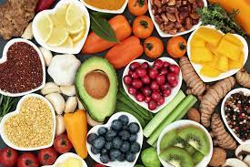

 Entendemos por estilo de vida saludable aquellos hábitos de nuestra vida
diaria que nos ayudan a mantenernos más sanos y con menos limitaciones funcionales.
Para llevar una vida más sana nos debemos centrar, principalmente, en dos aspectos: nuestra dieta y el ejercicio físico.
La actividad física regular confiere distintos beneficios a la salud, entre otros, la prevención de enfermedades crónicas, como la diabetes, la hipertensión o la obesidad, a lo que se suman sus
efectos importantes en la salud mental, emocional, calidad de sueño, prevención de caídas, fracturas y demás.